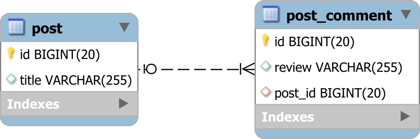

oneToMany¶
Pour une description plus détaillée cf le lien suivant
OneToMany relationship with JPA & hibernate
Unidirectionnel¶
public class Post{
@OneToMany(
cascade = CascadeType.ALL,
orphanRemoval = true,
fetch = FetchType.EAGER)
@JoinColumn(name = "produit_id") // c'est la FK qui sera dans la table 'comment'
List<Comment> postComments = new ArrayList<>();
cascade permet de définir quel impact l’action sur une entité aura sur son entité associée.
Le type ‘ALL’ signifie que toutes les actions sur l’entité Produit seront propagées sur l’entité Commentaires.
Exemple : si on supprime le produit, les commentaires associés seront également supprimés.
orphanRemoval=true permet d’activer un mécanisme qui garantit la non-existence de commentaire orphelin de son produit.
Si on supprime un commentaire de la liste des commentaires du Product, alors le commentaire devient orphelin, et il est supprimé de la base de données.
fetch possède la valeur EAGER, et cela signifie qu’à la récupération du produit, tous les commentaires seront également récupérés.
Note
Par defaut, hibernate met tous les fetch en LAZY
@JoinColumn : on y met le nom de l’attribut de notre entité ici produit qui sera la FK dans l’autre entity: PostComment
Avertissement
On ne mets rien dans l’autre classe: pas de references
Bidirectionnel¶
public class Post{
@OneToMany(
mappedBy = "post" // on fait référence à l'attribut dans l'autre classe: PostComment
cascade = CascadeType.ALL,
orphanRemoval = true)
List<Comment> postComments = new ArrayList<>();
il n’y a plus de FetchType EAGER : on garde le fetch FetchType:LAZY par défaut d’hibernate
On supprime le @JoinColumn et on le remplace par mappedBy avec comme référence l’attribut qui est désigné dans l’autre classe :PostComment
public class PostComment{
@ManyToOne(cascade = CascadeType.ALL)
@JoinColumn(name="postID") //référence FK dans la table PostComment sur la colonne de Post: postID'
private Post post;
Note
dans une relation bidriectionnelle, le @JoinColum est toujours dans le ManytoOne
Dans notre classe PostComment, on ajoute un attribut post et on utilise le @JoinColum pour obtenir un fk sur cette table Post
{kind=link}
Helpers Method¶
On utilise des Helpers Method dans la classe OneToMany pour permettre de simplifier la persistance en cascade.
public void addComment(PostComment comment) {
comments.add(comment);
comment.setPost(this);
}
public void removeComment(PostComment comment) {
comments.remove(comment);
comment.setPost(null);
}
Override equals & hashcode¶
Dans la classe Many to One,il est recommandé de redefinir les methodes equals et hashcode
en prennant en compte l’identifiant Id:
@Override
public boolean equals(Object o) {
if (this == o) return true;
if (!(o instanceof PostComment )) return false;
return id != null && id.equals(((PostComment) o).getId());
}
@Override
public int hashCode() {
return getClass().hashCode();
}